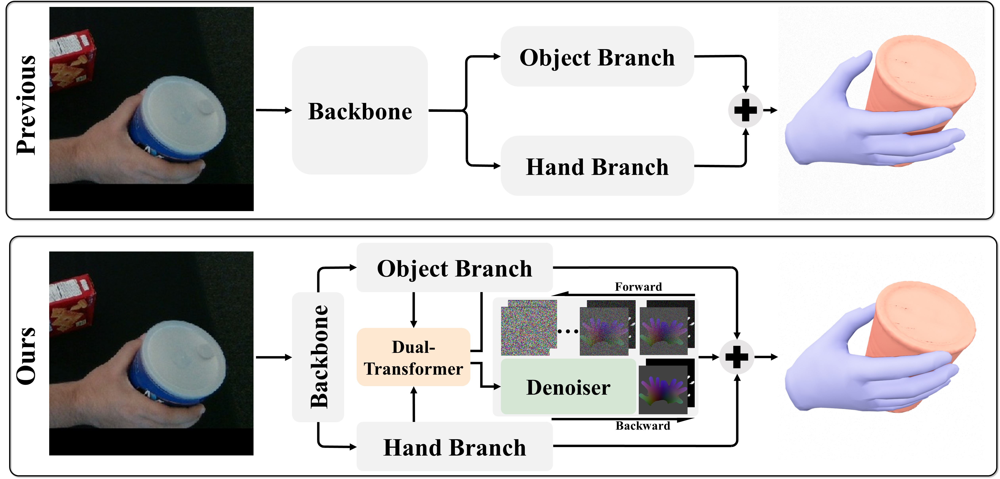

UVDiff: Learning Contact-Aware UV Diffusion to Reconstruct Hand-Object Interaction from Monocular ImagesBinghui Zuo, Lin Zhou, Xiaohan Yuan, Wenqian Sun, Yangang Wang
Preprint, 2026
Preprint, 2026
A contact-aware UV representation unifies hand topology and contact patterns in a 2D UV space.